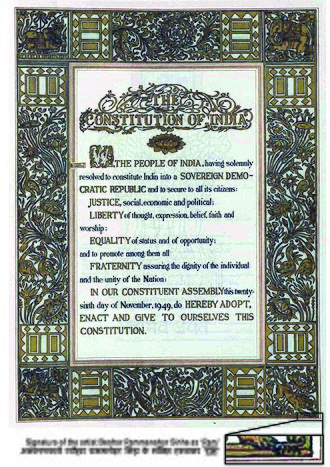
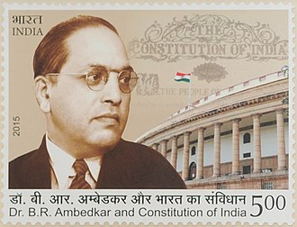
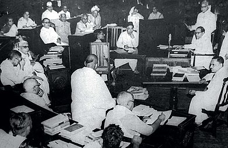

The Constitution of India (IAST: Bhāratīya Saṃvidhāna) is the supreme law of India.[3][4] The document lays down the framework that demarcates fundamental political code, structure, procedures, powers, and duties of government institutions and sets out fundamental rights, directive principles, and the duties of citizens. It is the longest written national constitution in the world.[5][6][7] It imparts constitutional supremacy (not parliamentary supremacy, since it was created by a constituent assembly rather than Parliament) and was adopted by its people with a declaration in its preamble.[8] Parliament cannot override the constitution. B. R. Ambedkar and Constitution of India on a 2015 postage stamp of India It was adopted by the Constituent Assembly of India on 26 November 1949 and became effective on 26 January 1950.[9] The constitution replaced the Government of India Act 1935 as the country's fundamental governing document, and the Dominion of India became the Republic of India. To ensure constitutional autochthony, its framers repealed prior acts of the British parliament in Article 395.[10] India celebrates its constitution on 26 January as Republic Day.[11] The constitution declares India a sovereign, socialist, secular,[12] and democratic republic, assures its citizens justice, equality, and liberty, and endeavours to promote fraternity.[13] The original 1950 constitution is preserved in a helium-filled case at the Parliament House in New Delhi. The words "secular" and "socialist" were added to the preamble by 42nd amendment act in 1976 during the Emergency.[14]
In 1928, the All Parties Conference convened a committee in Lucknow to prepare the Constitution of India, which was known as the Nehru Report.[15] Most of the colonial India was under British rule from 1857 to 1947. From 1947 to 1950, the same legislation continued to be implemented as India was a dominion of Britain for these three years, as each princely state was convinced by Sardar Patel and V.P.Menon to sign the articles of integration with India, and the British government continued to be responsible for the external security of the country.[16] Thus, the constitution of India repealed the Indian Independence Act 1947 and Government of India Act 1935 when it became effective on 26 January 1950. India ceased to be a dominion of the British Crown and became a sovereign, democratic and republic with the constitution. Articles 5, 6, 7, 8, 9, 60, 324, 366, 367, 379, 380, 388, 391, 392, 393, and 394 of the constitution came into force on 26 November 1949, and the remaining articles became effective on 26 January 1950.[17]
The constitution was drawn from a number of sources. Mindful of India's needs and conditions, its framers borrowed features of previous legislation such as the Government of India Act 1858, the Indian Councils Acts of 1861, 1892 and 1909, the Government of India Acts 1919 and 1935, and the Indian Independence Act 1947. The latter, which led to the creation of India and Pakistan, divided the former Constituent Assembly in two. The Amendment act of 1935 is also a very important step for making the constitution for two new born countries. Each new assembly had sovereign power to draft and enact a new constitution for the separate states.[18]
The constitution was drafted by the Constituent Assembly, which was elected by elected members of the provincial assemblies.[19] The 389-member assembly (reduced to 299 after the partition of India) took almost three years to draft the constitution holding eleven sessions over a 165-day period.[5][18]
Having studied the constitutions of about 60 countries, Ambedkar was considered a wise constitutional expert. Ambedkar is recognised as the "Father of the Constitution of India".[20][21] In the constitution assembly, a member of the drafting committee, T. T. Krishnamachari said:
Mr. President, Sir, I am one of those in the House who have listened to Dr. Ambedkar very carefully. I am aware of the amount of work and enthusiasm that he has brought to bear on the work of drafting this Constitution. At the same time, I do realise that that amount of attention that was necessary for the purpose of drafting a constitution so important to us at this moment has not been given to it by the Drafting Committee. The House is perhaps aware that of the seven members nominated by you, one had resigned from the House and was replaced. One died and was not replaced. One was away in America and his place was not filled up and another person was engaged in State affairs, and there was a void to that extent. One or two people were far away from Delhi and perhaps reasons of health did not permit them to attend. So it happened ultimately that the burden of drafting this constitution fell on Dr. Ambedkar and I have no doubt that we are grateful to him for having achieved this task in a manner which is undoubtedly commendable.[22][23]
G. V. Mavlankar was the first Speaker of the Lok Sabha (the lower house of Parliament) after India turned into a republic.
B. R. Ambedkar, Sanjay Phakey, Jawaharlal Nehru, C. Rajagopalachari, Rajendra Prasad, Vallabhbhai Patel, Kanaiyalal Maneklal Munshi, Ganesh Vasudev Mavalankar, Sandipkumar Patel, Abul Kalam Azad, Shyama Prasad Mukherjee, Nalini Ranjan Ghosh, and Balwantrai Mehta were key figures in the assembly,[5][18] which had over 30 representatives of the scheduled classes. Frank Anthony represented the Anglo-Indian community,[5] and the Parsis were represented by H. P. Modi.[5] Harendra Coomar Mookerjee, a Christian assembly vice-president, chaired the minorities committee and represented non-Anglo-Indian Christians.[5] Ari Bahadur Gurung represented the Gorkha community.[5] Judges, such as Alladi Krishnaswamy Iyer, Benegal Narsing Rau, K. M. Munshi and Ganesh Mavlankar were members of the assembly.[5] Female members included Sarojini Naidu, Hansa Mehta, Durgabai Deshmukh, Amrit Kaur and Vijaya Lakshmi Pandit.[5]
The first, two-day president of the assembly was Sachchidananda Sinha; Rajendra Prasad was later elected president.[18][19] It met for the first time on 9 December 1946.[5][19][14]
Constitution of india

Overview
Jurisdiction
india
Ratified
26 November 1949; 72 years ago
Data effective
26 January 1950; 72 years ago
Syatem
Federal Parliamentary Constitutional Republic
Government structure
Branches
Three (Executive, Legislature and Judiciary)
Chambers
Two (Rajya Sabha and Lok Sabha)
Executive
Prime minister–led cabinet responsible to the lower house of the parliament
Judiciary
Supreme court, high courts and district courts
Federalism
Federal[1]
Electoral college
Yes, for presidential and vice-presidential elections
Entrenchments
2
History
Amendments
105
Last amended
10 August 2021 (105th)
Citation
Constitution of India (PDF), 9 September 2020, archived from the original (PDF) on 29 September 2020
Location
Parliament House, New Delhi, India
Author(s)
B. R. Ambedkar (Chairman of the Drafting Committee) B. N. Rau (Constitutional Advisor to the Constituent Assembly) Surendra Nath Mukherjee (Chief Draftsman of the Constituent Assembly)[2] and other members of Constituent Assembly
Signatories
284 members of the Constituent Assembly
Supersedes
Government of India Act 1935 Indian Independence Act 1947

B. R. Ambedkar and Constitution of India on a 2015 postage stamp of India

Babasaheb Ambedkar, chairman of the drafting committee, presenting the final draft of the Indian constitution to Constituent Assembly president Rajendra Prasad on 25 November 1949
The executive, legislative, and judicial branches of government receive their power from the constitution and are bound by it.[58] With the aid of its constitution, India is governed by a parliamentary system of government with the executive directly accountable to the legislature.
The constitution is considered federal in nature, and unitary in spirit. It has features of a federation, including a codified, supreme constitution; a three-tier governmental structure (central, state and local); division of powers; bicameralism; and an independent judiciary. It also possesses unitary features such as a single constitution, single citizenship, an integrated judiciary, a flexible constitution, a strong central government, appointment of state governors by the central government, All India Services (the IAS, IFS and IPS), and emergency provisions. This unique combination makes it quasi-federal in form.[59]
Each state and union territory has its own government. Analogous to the president and prime minister, each has a governor or (in union territories) a lieutenant governor and a chief minister. Article 356 permits the president to dismiss a state government and assume direct authority if a situation arises in which state government cannot be conducted in accordance with constitution. This power, known as president's rule, was abused as state governments came to be dismissed on flimsy grounds for political reasons. After the S. R. Bommai v. Union of India decision,[60][61] such a course of action is more difficult since the courts have asserted their right of review.[62]
The 73rd and 74th Amendment Acts introduced the system of panchayati raj in rural areas and Nagar Palikas in urban areas.[14] Article 370 gave special status to the state of Jammu and Kashmir.
dictates the procedure for constitutional amendments. Amendments are additions, variations or repeal of any part of the constitution by Parliament.[63] An amendment bill must be passed by each house of Parliament by a two-thirds majority of its total membership when at least two-thirds are present and vote. Certain amendments pertaining to the constitution's federal nature must also be ratified by a majority of state legislatures.
Unlike ordinary bills in accordance with Article 245 (except for money bills), there is no provision for a joint session of the Lok Sabha and Rajya Sabha to pass a constitutional amendment. During a parliamentary recess, the president cannot promulgate ordinances under his legislative powers under Article 123, Chapter III.
Despite the supermajority requirement for amendments to pass, the Indian constitution is the world's most frequently-amended national governing document.[64] The constitution is so specific in spelling out government powers that many amendments address issues dealt with by statute in other democracies.
In 2000, the Justice Manepalli Narayana Rao Venkatachaliah Commission was formed to examine a constitutional update. The commission submitted its report on 31 March 2002. However, the recommendations of this report have not been accepted by the consecutive governments.
The government of India establishes term-based law commissions to recommend legal reforms, facilitating the rule of law.
In Kesavananda Bharati v. State of Kerala, the Supreme Court ruled that an amendment cannot destroy what it seeks to modify; it cannot tinker with the constitution's basic structure or framework, which are immutable. Such an amendment will be declared invalid, although no part of the constitution is protected from amendment; the basic structure doctrine does not protect any one provision of the constitution. According to the doctrine, the constitution's basic features (when "read as a whole") cannot be abridged or abolished. These "basic features" have not been fully defined,[58] and whether a particular provision of the constitution is a "basic feature" is decided by the courts.[65]
The Kesavananda Bharati v. State of Kerala decision laid down the constitution's basic structure:[1]
This implies that Parliament can only amend the constitution to the limit of its basic structure. The Supreme Court or a high court may declare the amendment null and void if this is violated, after a judicial review. This is typical of parliamentary governments, where the judiciary checks parliamentary power.
In its 1967 Golak Nath v. State of Punjab decision, the Supreme Court ruled that the state of Punjab could not restrict any fundamental rights protected by the basic structure doctrine.[66] The extent of land ownership and practice of a profession, in this case, were considered fundamental rights.[67] The ruling was overturned with the ratification of the 24th Amendment in 1971.[67]
The judiciary is the final arbiter of the constitution.[68] Its duty (mandated by the constitution) is to act as a watchdog, preventing any legislative or executive act from overstepping constitutional bounds.[69] The judiciary protects the fundamental rights of the people (enshrined in the constitution) from infringement by any state body, and balances the conflicting exercise of power between the central government and a state (or states).
The courts are expected to remain unaffected by pressure exerted by other branches of the state, citizens or interest groups. An independent judiciary has been held as a basic feature of the constitution,[70][71] which cannot be changed by the legislature or the executive.[72] Article 50 of the Constitution provides that the state must take measures to separate the judiciary from the executive in the public services.
Judicial review was adopted by the constitution of India from judicial review in the United States.[73] In the Indian constitution, judicial review is dealt with in Article 13. The constitution is the supreme power of the nation, and governs all laws. According to Article 13:
Due to the adoption of the Thirty-eighth Amendment, the Supreme Court was not allowed to preside over any laws adopted during a state of emergency which infringe fundamental rights under article 32 (the right to constitutional remedies).[76] The Forty-second Amendment widened Article 31C and added Articles 368(4) and 368(5), stating that any law passed by Parliament could not be challenged in court. The Supreme Court ruled in Minerva Mills v. Union of India that judicial review is a basic characteristic of the constitution, overturning Articles 368(4), 368(5) and 31C.[77]
Chapter 1 of the Constitution of India creates a parliamentary system, with a Prime Minister who, in practice, exercises most executive power. The prime minister must have the support of a majority of the members of the Lok Sabha, or lower House of Parliament. If the Prime Minister does not have the support of a majority, the Lok Sabha can pass a motion of no confidence, removing the Prime Minister from office. Thus the Prime Minister is the member of parliament who leads the majority party or a coalition comprising a majority.[78] The Prime Minister governs with the aid of a Council of Ministers, which the Prime Minister appoints and whose members head ministries. Importantly, Article 75 establishes that "the Council of Ministers shall be collectively responsible to the House of the People" or Lok Sabha.[79] The Lok Sabha interprets this article to mean that the entire Council of Ministers can be subjected to a no confidence motion.[80] If a no confidence motion succeeds, the entire Council of Ministers must resign.
Despite the Prime Minister exercising executive power in practice, the constitution bestows all the national government's executive power in the office of the President.[81] This de jure power is not exercised in reality, however. Article 74 requires the President follow the "aid and advice" of the Council, headed by the Prime Minister.[82] In practice, this means that President's role is mostly ceremonial, with the Prime Minister exercising executive power because the President is obligated to act on the Prime Minister's wishes.[83] The President does retain the power to ask the Council to reconsider its advice, however, an action the President may take publicly. The Council is not required to make any changes before resubmitting the advice to the President, in which case the President is constitutionally required to adhere to it, overriding the President's discretion.[82] Previous Presidents have used this occasion to make public statements about their reasoning for sending a decision back to the Council, in an attempt to sway public opinion.[83] This system, with an executive who only possesses nominal power and an official "advisor" who possess actual power, is based on the British system and is a result of colonial influences on India before and during the writing of its constitution.[84][85]
The President is chosen by an electoral college composed of the members of both the national and state legislatures. Article 55 outlines the specifics of the electoral college. Half of the votes in the electoral college are assigned to state representatives in proportion to the population of each state and the other half are assigned to the national representatives. The voting is conducted using a secret, single transferable vote.[86]
While the Constitution gives the legislative powers to the two Houses of Parliament, Article 111 requires the President's signature for a bill to become law. Just as with the advice of the Council, the President can refuse to sign and send it back to the Parliament, but the Parliament can in turn send it back to the President who must then sign it.[87]
Despite the President's mandate to obey the advice of the Prime Minister and the Council, Article 75 declares that both "shall hold office during the pleasure of the President."[79] This means the President has the constitutional power to dismiss the Prime Minister or Council at anytime. If the Prime Minister still retained a majority vote in the Lok Sabha, however, this could trigger a constitutional crisis because the same article of the Constitution states that the Council of Ministers is responsible to the Lok Sabha and must command a majority in it. In practice the issue has never arisen, though President Zail Singh threatened to remove Prime Minister Rajiv Gandhi from office in 1987.[88]
When either or both Houses of Parliament are not in session, the Prime Minister, acting via the President, can unilaterally exercise the legislative power, creating ordinances that have the force of law. These ordinances expire six weeks after Parliament reconvenes or sooner if both Houses disapprove.[89] The Constitution declares that ordinances should only be issued when circumstances arise that require "immediate action." Because this term is not defined, governments have begun abusing the ordinance system to enact laws that could not pass both Houses of Parliament, according to some commentators.[90] This appears to be more common with divided government; when the Prime Minister's party controls the lower house but not the upper house, ordinances can be used to avoid needing the approval of the opposition in the upper house. In recent years, around ten ordinances have been passed annually, though at the peak of their use, over 30 were passed in a single year.[91] Ordinances can vary widely on their topic; recent examples of ordinances include items as varied as modifications to land owner rights, emergency responses to the COVID-19 pandemic, and changes to banking regulations.[91][92]
The first article of the Constitution declares that India is a "Union of States."[93] Under the Constitution, the States retain key powers for themselves and have a strong influence over the national government via the Rajya Sabha. However, the Constitution does provide key limits on their powers and gives final say in many cases to the national government.
At the Union level, the States are represented in the Rajya Sabha or Council of States. The Fourth Schedule of the Constitution lays out the number of seats that each State controls in the Council of States, and they are based roughly on each State's population.[94] The members of each state legislature elect and appoint these representatives in the Council of States.[95] On most topics the Rajya Sabha is coequal with the lower house or Lok Sabha, and its consent is required for a bill to become a law.[96] Additionally, as one of the Houses of Parliament, any amendment to the Constitution requires a two-thirds majority in the Rajya Sabha to go into effect.[97] These provisions allow the States significant impact on national politics through their representation in the "federal chamber."[94]
The Constitution provides the States with a long list of powers exclusive to their jurisdiction.[94] Generally only State Legislatures are capable of passing laws implementing these powers; the Union government is prohibited from doing so. These powers are contained in the second list of the Seventh Schedule of the Constitution, known as the State List. The areas on the State List are wide-ranging and include topics like public health and order and a variety of taxes. The State List grants the states control over the police, healthcare, agriculture, elections, and more.[98]
Powers can only be permanently removed from the State List via a constitutional amendment approved by a majority of the states. The Rajya Sabha, as the representative of the States, can temporarily remove an item from the State List so the Union parliament can legislate on it. This requires a two-thirds vote and lasts for a renewable one-year period.[94]
In addition to exerting influence over the amendment process via the Rajya Sabha, the States are sometimes involved in the amendment process. This special, entrenched process is triggered when an amendment to the Constitution specifically concerns the States by modifying the legislature or the powers reserved to the states in the Seventh Schedule. When this occurs, an amendment must be ratified by a majority of state legislatures for the amendment to go into effect.[97]
While the State List mentioned above provides powers for the States, there are two other lists in the Seventh Schedule that generally weaken them. These are the Union and Concurrent lists. The Union List is the counterpart to the State List, containing the areas of exclusive jurisdiction of the Union government, where the states are prohibited from legislating.[99] Items on the Union List include the national defense, international relations, immigration, banking, and interstate commerce.[98]
The final list is the Concurrent List which contains the topics on which both the Union and State-level governments may legislate on. These topics include courts and criminal law, unions, social security, and education.[98] In general, when the Union and State laws on a Concurrent List item conflict, the Union-level laws prevail. The only way for the State-level law to override the national one is with the consent of the President, acting on the advice of the Prime Minister.[100]
Additionally, any powers not on any of the three lists are reserved for the Union government and not for the states.[101]
The Governor of each State is given the executive power of the respective State by the Constitution.[102] These Governors are appointed directly by the President of the central government. Because the Prime Minister acts via the President, the Prime Minister is the one who chooses the Governors in practice.[103] Once appointed, a Governor serves for a five year term or can be replaced by the President at any time, if asked to do so by the Prime Minister.[104] Because the Union government can remove a Governor at any time, it is possible that Governors may act in a way the Union Government wants, to the detriment of their state, so that they can maintain their office. This has become a larger issue as the State Legislatures are often controlled by different parties than that of the Union Prime Minister, unlike the early years of the constitution.[105] For example, Governors have used stalling tactics to delay giving their assent to legislation that the Union Government disapproves of.[106]
In general the influence of the Union on State politics via the Governor is limited, however, by the fact that the Governor must listen to the advice of the Chief Minister of the State who needs to command a majority in the State Legislature.[107] There are key areas where the Governor does not need to heed the advice of the Chief Minister. For example, the Governor can send a bill to President for consideration instead of signing it into law.[108]
Perhaps the most direct power over the States is the Union's ability to unilaterally create new states out of territories or existing states and to modify and diminish the boundaries of existing states.[109] To do so, Parliament must pass a simple law with no supermajority requirements. The States involved do not have a say on the outcome but the State Legislature must be asked to comment.[110] The most recent state to be created was Telangana in 2014.[111] More recently, Ladakh was created as a new Union Territory after being split off from Jammu and Kashmir in 2019, and Daman and Diu and Dadra and Nagar Haveli were combined into a single Union Territory in 2020.[112][113] The former was particularly controversial. Jammu and Kashmir was a full state, and the legislation creating Ladakh stripped the area of its status as a state and downgraded it to a Union Territory, allowing the Union Government to directly control it. This required no input from Jammu and Kashmir.[114]
While the states have separate legislative and executive branches, they share the judiciary with the Union government. This is different from other federal court systems, such as the United States, where state courts mainly apply state law and federal courts mainly apply federal law.[115] Under the Indian constitution, the High Courts of the States are directly constituted by the national constitution. The constitution also allows states to set up lower courts under and controlled by the state's High Court.[116][117] Cases heard at or appealed to the High Courts can be furter appealed to the Supreme Court of India in some cases.[118] All cases, whether dealing with federal or state laws, move up the same judicial hierarchy, creating a system sometimes termed integrated federalism.[115]
The Constitution includes treaty making as part of the executive power given to the President.[119] Because the President must act in accordance with the advice of the Council of Ministers, the Prime Minister is the chief party responsible for making international treaties in the Constitution. Because the legislative power rests with Parliament, the President's signature on an international agreement does not bring it into effect domestically or enable courts to enforce its provisions. Article 253 of the Constitution bestows this power on Parliament, enabling it to make laws necessary for implementing international agreements and treaties.[120] These provisions indicate that the Constitution of India is dualist, that is, treaty law only takes effect when a domestic law passed using the normal processes incorporates it into domestic law.[121]
Recent Supreme Court decisions have begun to change this convention, incorporating aspects of international law without enabling legislation from parliament.[122] For example in Gramophone Company of India Ltd. v Birendra Bahadur Pandey, the Court held that "the rules of international law are incorporated into national law and considered to be part of the national law, unless they are in conflict with an Act of Parliament."[123] In essence, this implies that international law applies domestically unless parliament says it does not.[121] This decision moves the Indian Constitution to a more hybrid regime, but not to a fully monist one.
According to Granville Austin, "The Indian constitution is first and foremost a social document, and is aided by its Parts III & IV (Fundamental Rights & Directive Principles of State Policy, respectively) acting together, as its chief instruments and its conscience, in realising the goals set by it for all the people."[h][124] The constitution has deliberately been worded in generalities (not in vague terms) to ensure its flexibility.[125] John Marshall, the fourth chief justice of the United States, said that a constitution's "great outlines should be marked, its important objects designated, and the minor ingredients which compose those objects be deduced from the nature of the objects themselves."[126] A document "intended to endure for ages to come",[127] it must be interpreted not only based on the intention and understanding of its framers, but in the existing social and political context.
The "right to life" guaranteed under Article 21[A] has been expanded to include a number of human rights, including:[5]
At the conclusion of his book, Making of India's Constitution, retired Supreme Court Justice Hans Raj Khanna wrote:
If the Indian constitution is our heritage bequeathed to us by our founding fathers, no less are we, the people of India, the trustees and custodians of the values which pulsate within its provisions! A constitution is not a parchment of paper, it is a way of life and has to be lived up to. Eternal vigilance is the price of liberty and in the final analysis, its only keepers are the people.[131]